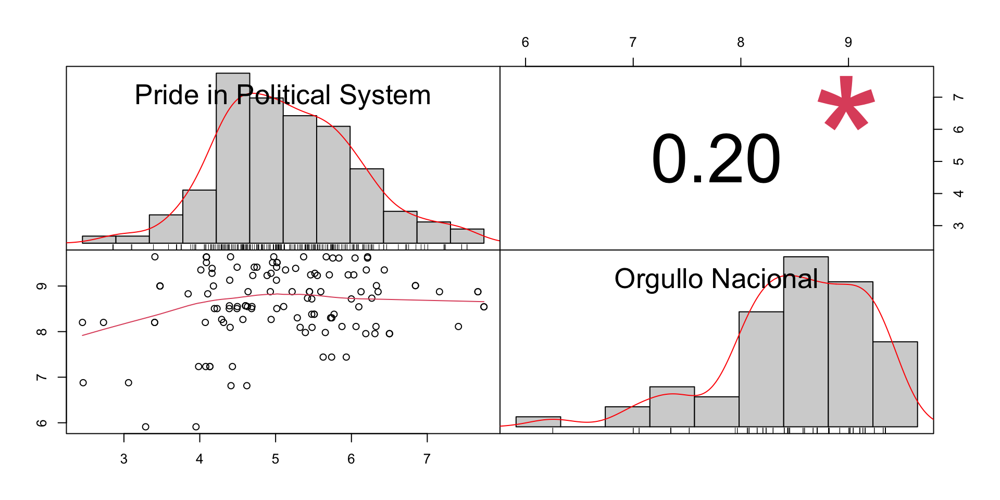
Propuesta Indicadores Cohesión Social
Introducción
Nos propusimos en este documento es revisar la construcción de índices de Cohesión Social para América Latina realizada a partir de datos de LAPOP, Latinobarómetro y la Encuesta Mundial de Valores.
En primer lugar, incluimos datos de las olas más recientes de LAPOP (2023) y Latinobarómetro (2022). Dado que los datos anteriores llegaban hasta 2018, incluir estas nuevas mediciones podría permitir realizar un análisis macro de los efectos de la pandemia sobre la Cohesión Social.
Luego, nos centramos en hacer una revisión empírica y teórica de los indicadores anteriormente propuestos, detectando algunas posibles falencias. A partir de este diagnóstico, avanzamos hacia propuesta buscando lograr el mejor ajuste estadístico y teórico del modelo.
Análisis
Recordemos que la propuesta inicial, con indicadores, subdimensiones y dimensiones – es la que sigue:

Indicadores
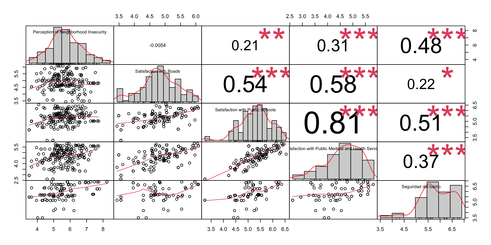

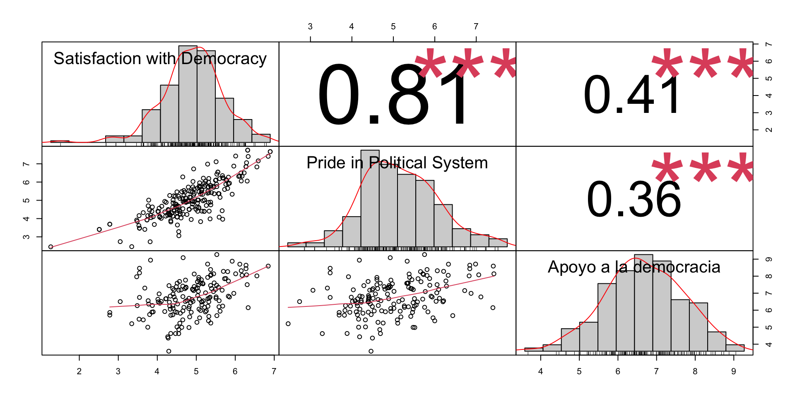
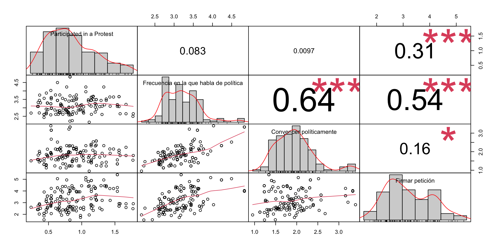

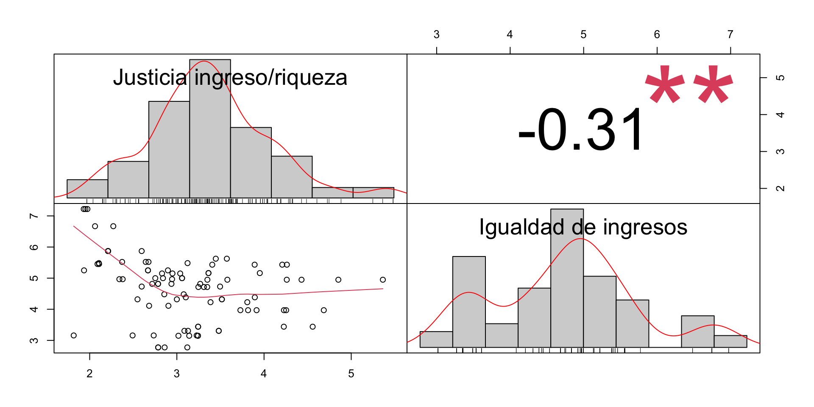
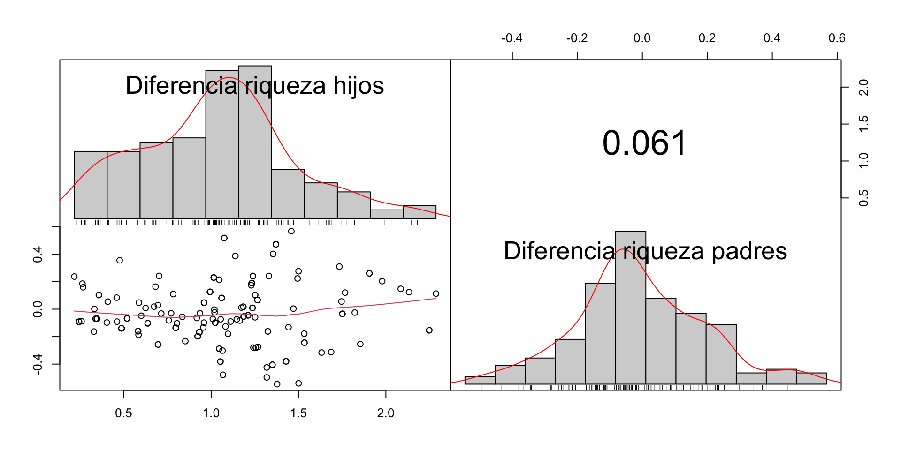
Algunas observaciones:
Orgullo Nacional: Se observa una correlación moderada a baja (0,2) entre los dos indicadores de esta subdimensión.
Satisfacción Residencial: En general, se observan correlaciones de moderadas a fuertes entre los indicadores de esta subdimensión. Los indicadores de seguridad correlaciona de manera más moderadas con los indicadores de acceso a servicios, lo que podría indicar la presencia de dos subdimensiones. Ahora bien, no sé si se justifica tener dos indicadores de seguridad, ya que ambos (uno de LAPOP y otro de WVS) miden lo mismo.
Comportamiento prosocial: Compuesto por único indicador que mide participación en reuniones comunitarias. Me genera dudas si este basta para armar una subdimensión de “comportamiento prosocial”
Participación Política: Aquí hay algunos indicadores que muestran correlaciones bajas. Hablar de política tiene las correlaciones más fuertes, pero ¿no mide más bien interés político? De hecho, así aparece en la propuesta echa a partir de ELSOC.
Interés Político: La correlación entre ambos indicadores es moderada a baja. Queda la misma dura que en la subdimensión anterior: Votar en las elecciones, ¿no es un indicador de participación política?
Surgir en la vida: La correlación entre ambos indicadores es inexistente. Tampoco sé si me hace tanto sentido teóricamente.
Subdimensiones
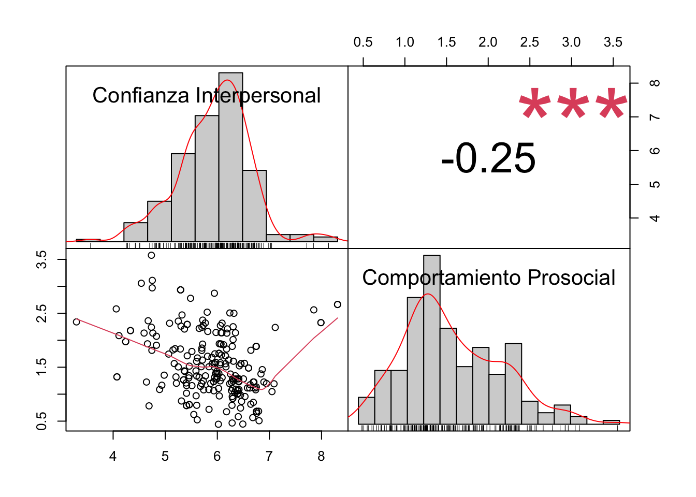

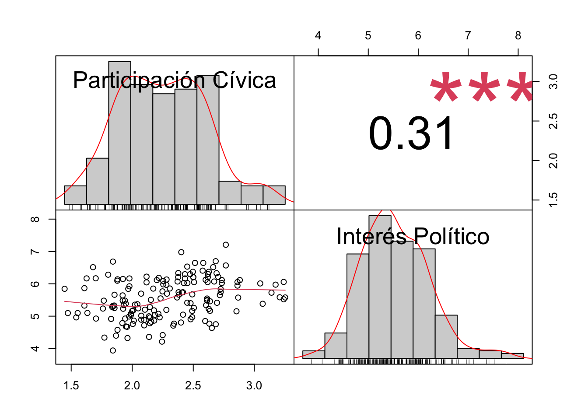
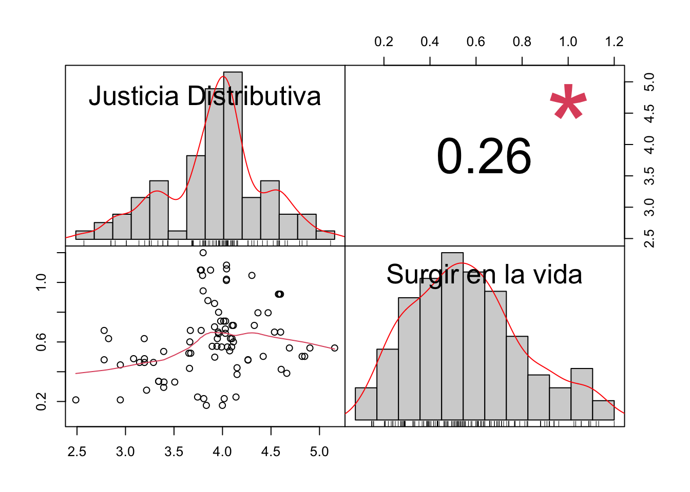
Observaciones:
- Redes sociales y sociabilidad: La correlación entre los dos indicadores y subdimensiones es moderada y negativa, ¿mayor confianza menor participación en reuniones sociales? Como se mencionó anteriormente, es posible que el indicador de comportamiento prosocial sea insuficiente para la subdimensión.
- Participación Política: La correlación es moderada. Podría aumentar mejorando la consistencia de los indicadores de cada subdimensión.
- Percepción de Justicia: Correlación moderada. Probablemente haya que revisar la subdimensión de surgir en la vida. Desde el punto de vista teórico, podríamos agregar una subdimensión de justicia procedimental
Dimensiones
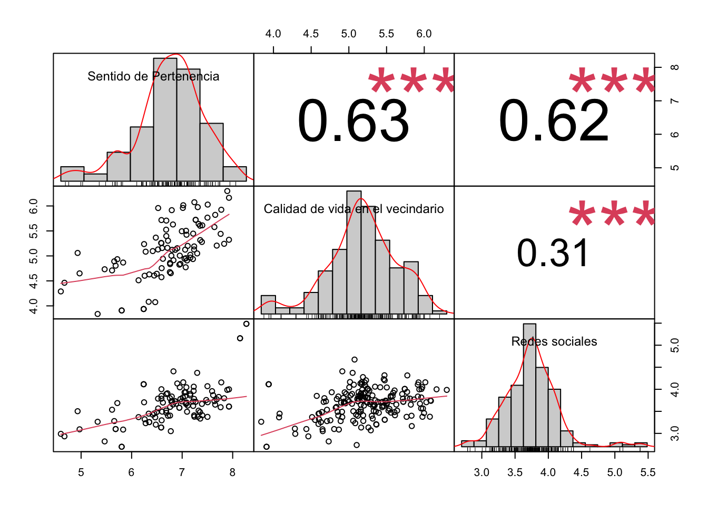
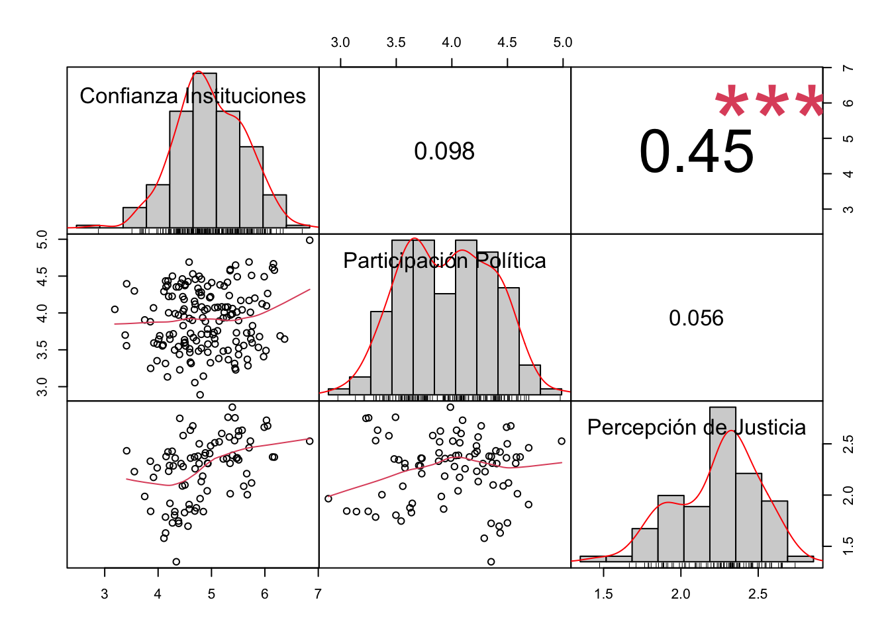
Observaciones
Cohesión Vertical: Las tres dimensiones de la cohesión horizontal muestran una buena correlación entre sí. Aunque la correlación entre calidad de vida en el vecindario y redes sociales podría mejorar.
Cohesión Horizontal: Participación política tiene correlaciones bajísimas con las otras subdimensiones.
Propuesta
Propongo reemplazar algunos de los indicadores para mejorar la coherencia teórica y estadística del modelo. La mayoría de los nuevos indicadores propuestos provienen de la Encuesta Mundial de Valores. Una limitación de esto es que la WVS cuenta con una menor participación de países latinoamericanos en comparacióna LAPOP y Latinobarométro. Esto tendría como consecuencia reducir la calidad de los indicadores, lo que redundaría en menos países disponibles.
Los cambios propuestos son los siguientes:
- En la subdimensión Satisfacción Residencial, eliminar el indicador de seguridad de la WVS, dejando solo el de LAPOP.
- En la subdimensión Comportamiento Prosocial, incluir de manera invertida un set de variables de la WVS que mide la legitimidad de acciones que podríamos denominar como antisociales: obtener beneficios sociales sin tener el derecho, evadir en el transporte público, aceptar un soborno, evadir impuestos.
- Incluir en la subdimensión de Participación Cívica un set de variables de participación política de la WVS: protestas pacíficas, huelgas y firmar peticiones. Además, incluir el indicador de voto en las últimas elecciones en esta subdimensión.
- Mover desde Participación Cívica hacia Interés Político el indicador de hablar de política.
- Incluir una subdimensión de Justicia Procedimental es la dimensión de Percepción de Justicia. Esta subdimensión se medirá através de un único indicador sobre percepción de corrupción presente en LAPOP.
Resultados
Finalmente, los subdimensiones de Comportamiento Prosocial y Participación Cívica quedaron compuestas únicamente por los indicadores nuevos incluidos desde la WVS. En los anexos es posibles observar que los indicadores original no mejoraron su ajuste al incluir los nuevos. Por otro lado, aunque la correlación de los indicadores de interés político mejoró, esta sigue siendo moderada (0,35)
Indicadores
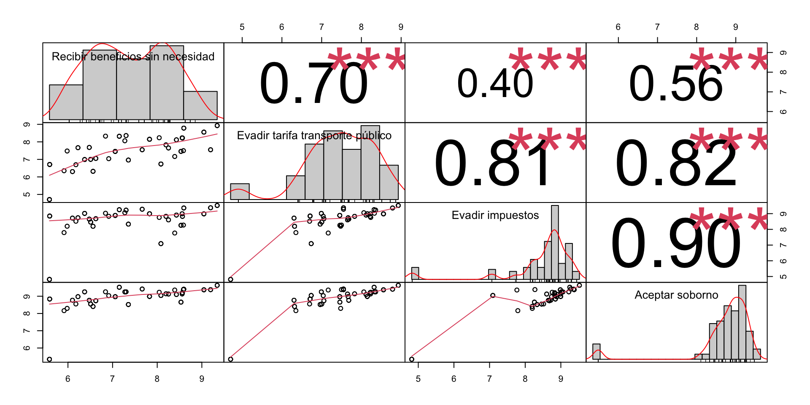
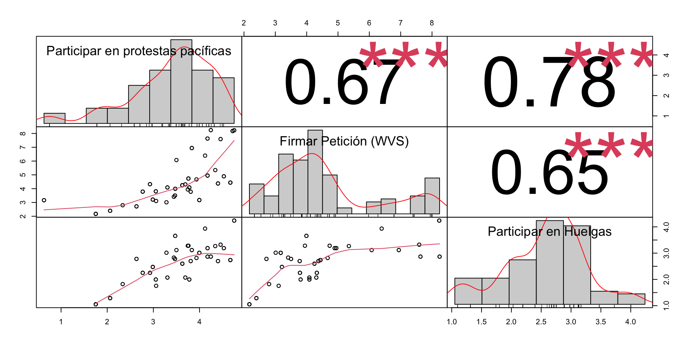
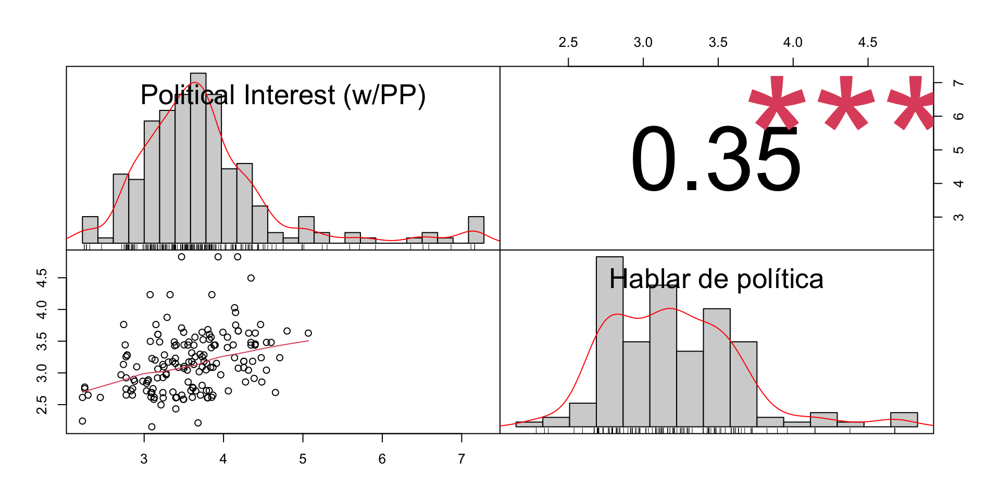
Subdimensiones
Correlaciones dimensiones
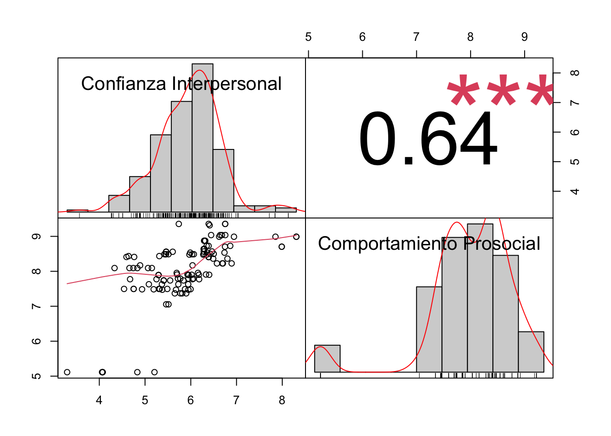
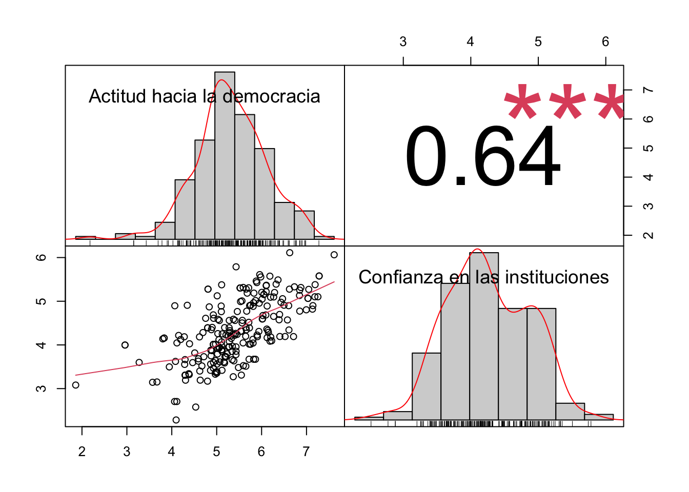
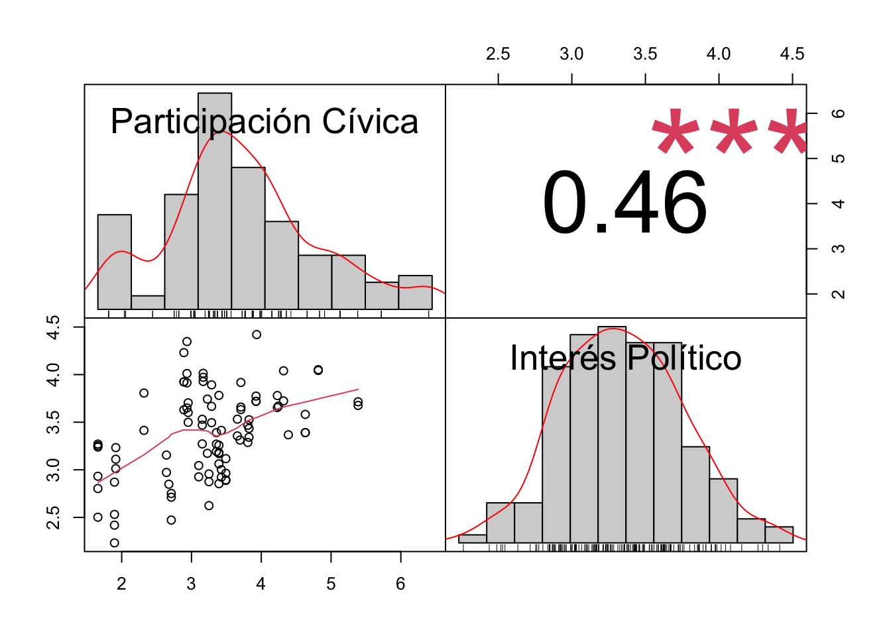
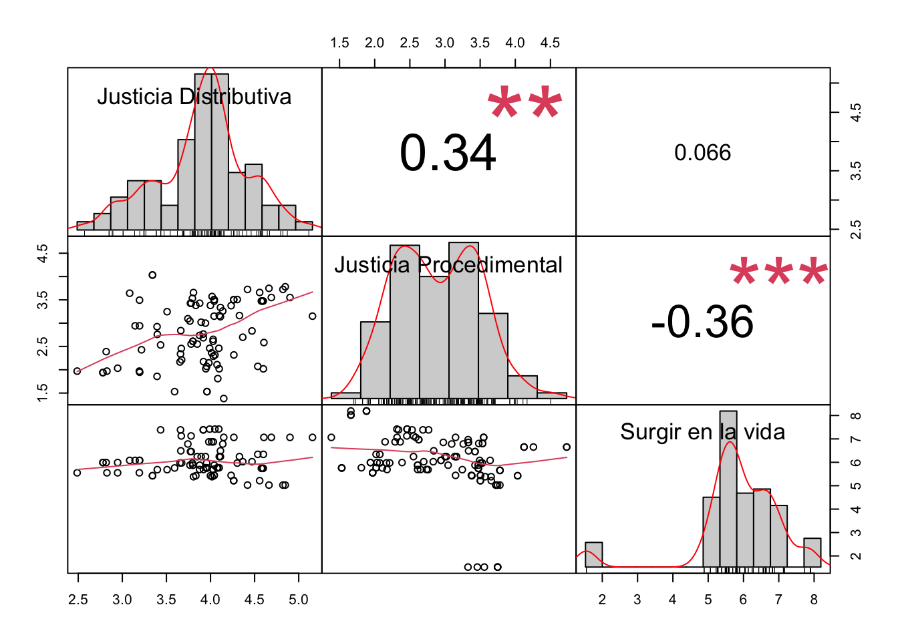
- La correlación entre las subdimensiones de Redes Sociales pasan de -0.25 a 0.64
- La correlación entre las subdimensiones de Apoyo a la Democracia pasó de 0,64 a 0,79
- La correlación entre las subdimensiones de Participación política suben desde 0,31 a 0,46
- La nueva subdimensión de justicia procedimental tiene una relación de 0,34 con justicia distributiva y de -0,36 con surgir en la vida (ahora medida como importancia del trabajo duro).
Dimensiones
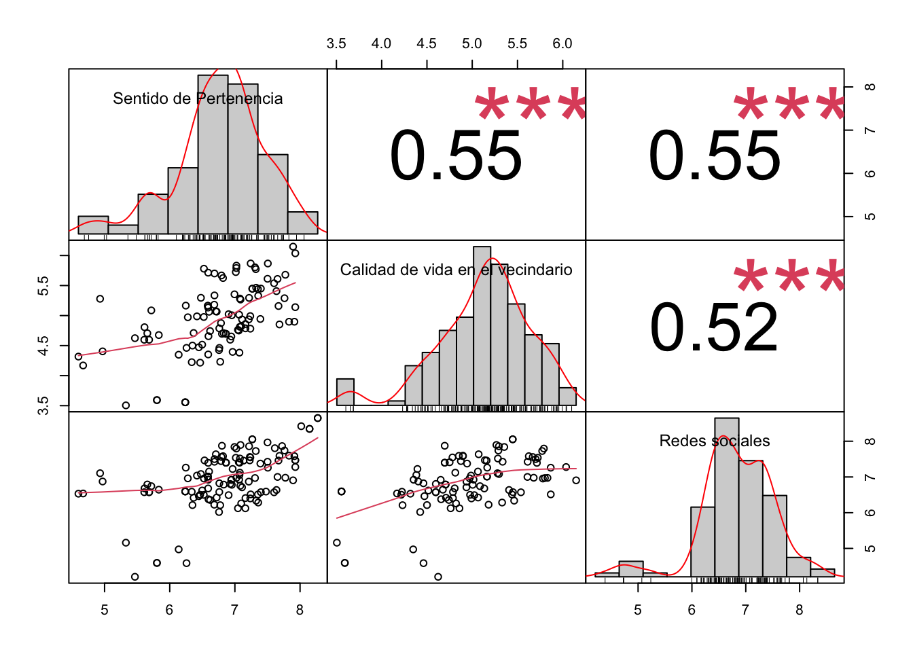

Las dimensiones de Cohesión Horizontal muestran correlaciones bastante buenas entre sí. No así las dimensiones de la Cohesión Vertical. Por alguna razón, Participación Política tiene muy baja correlación con las otras dos dimensiones.
Cohesión
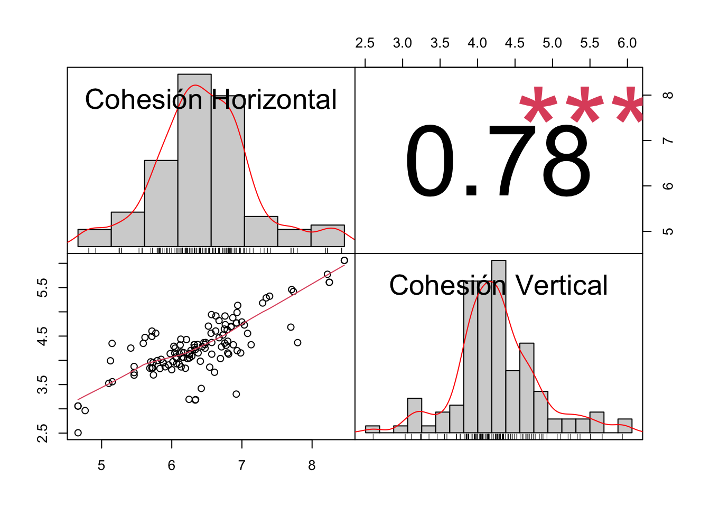
Pese a la baja coherencia interna de la dimensión vertical, la correlación entre ambas dimensiones de la cohesión social es de 0,78, bastante más alto que en la medición anterior.
Propuesta Final
En vista de todo lo anterior, la siguiente figura ilustra la propuesta final de indicadores.

Conclusiones
Esta nueva propuesta avanza hacia una mayor coherencia teórica y estadística para un modelo de medición de la cohesión social en América Latina. Muestra de esto las dimensiones verticales y horizontales de la cohesión pasan de tener una correlación global de -0,32 a una de 0,78. Sin embargo, se siguen observando algunos problemas de ajuste, particularmente en la Cohesión Vertical.
En primer lugar, la dimensión de Participación Política no muestra correlación con el resto. En segundo relación, la consistencia estadística de la dimensión de Percepciones de Justicia es ambigua. Con todo, las dificultades que implica la construcción de este tipo de modelos con, no solo una, sino tres fuentes secundarias, deben tenerse en cuenta en la evaluación de esta propuesta.
La mayor limitación de la propuesta es que la mayoría de los indicadores nuevos, incluyendo algunas subdimensiones enteras, provienen de la Encuesta Mundial de Valores. El efecto inmediato de esto es que mucho países que no participan en la WVS, particularmente de Centro América y el Caribe, quedan completa o parcialmente afuera de la medición.
En efecto, solo 7 países tienen datos para todas las 9 olas entre 2004 y 2022: Argentina, Brasil, Chile, Colombia, México, Estados Unidos y Uruguay.
Además, se suma los siguientes países con datos parciales
| País | Olas con datos válidos | N° Olas | % Olas |
|---|---|---|---|
| Bolivia | 2010-2022 | 6 | 67% |
| Canadá | 2004-2018 | 8 | 89% |
| Ecuador | 2006-2022 | 8 | 89% |
| Guatemala | 2004-2010; 2014-2022 | 8 | 89% |
| Haití | 2010-2022 | 6 | 67% |
| Nicaragua | 2014-2022 | 4 | 44% |
| Perú | 2006-2022 | 8 | 89% |
| Venezuela | 2014-2022 | 4 | 67% |
Algunas ausencias notables incluyen:
El Salvador: Por la prominencia que ha ganado en el debate regional a raíz de las medidas tomadas por el Gobierno de Nayib Bukele para combatir el crimen en ese país. Esto podría reflejarse en el salto que dan muchos indicadores en el país, alcanzando en 2022 niveles similares a Uruguay (los más altos en América Latina)
Costa Rica: Interesante en el contexto centroamericano por su estabilidad política y económica. Aunque muestra caídas desde 2004, se mantiene constantentemente con los indicadores más altos en América Central, solo superado por El Salvador en 2022.
Guyana: País pequeño pero que ha experimentado un rápido crecimiento económico en los últimos años debido al descubrimiento de reservas de petroleo. Pasó desde los niveles más bajos en 2014 a un aumento sustantivo y constante entre 2016 y 2022.
República Dominicana: Principal economía del Mar Caribe y país de mayor población entre los que no se tienen datos.
Paraguay: Único país hispanohablante de Sudamérica ausente.
Anexos
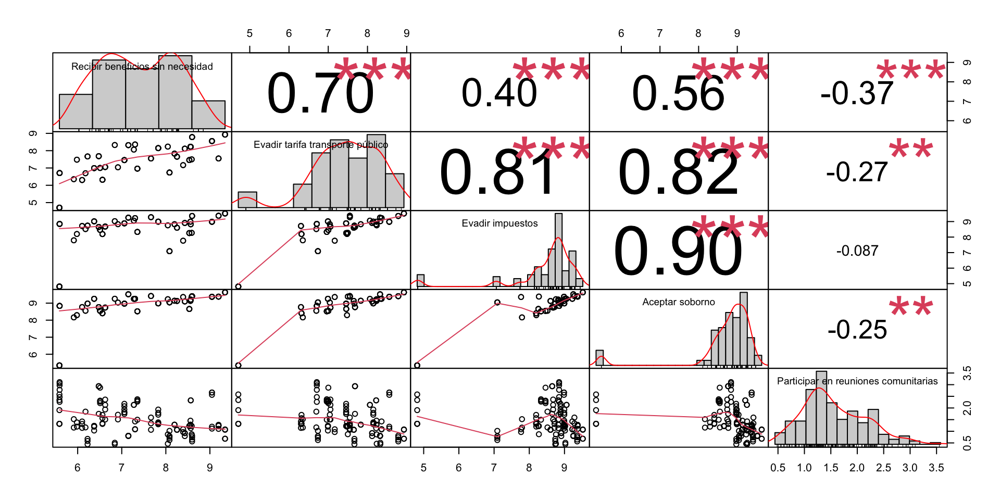
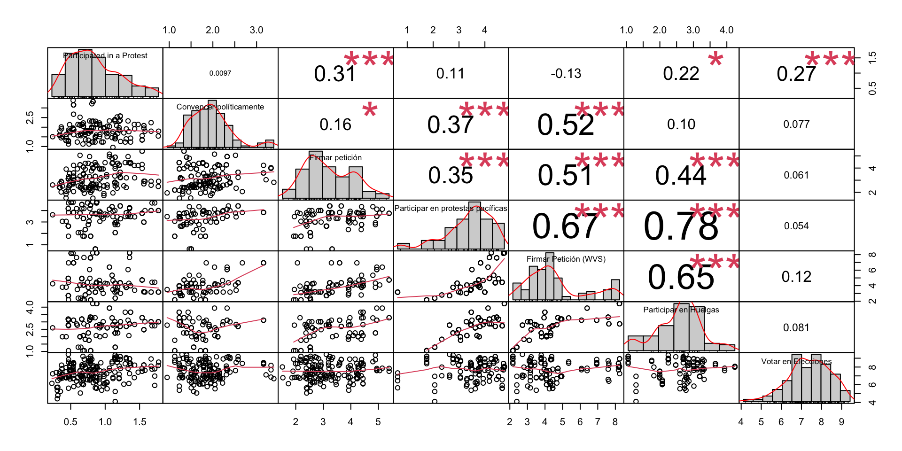
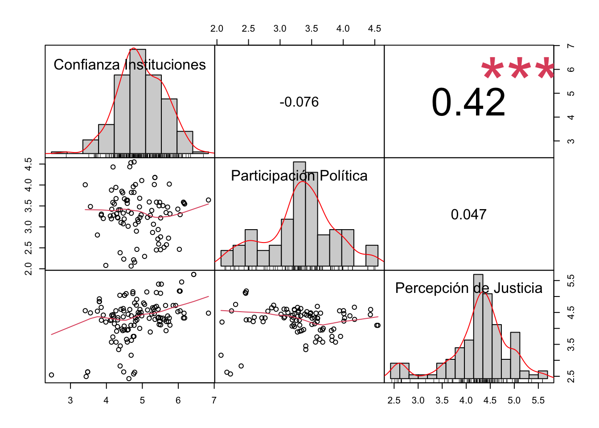